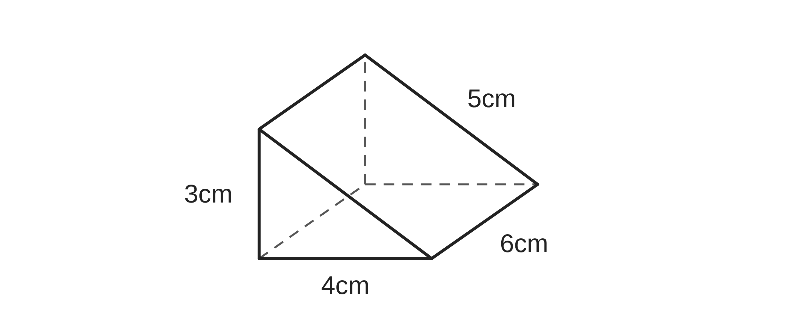
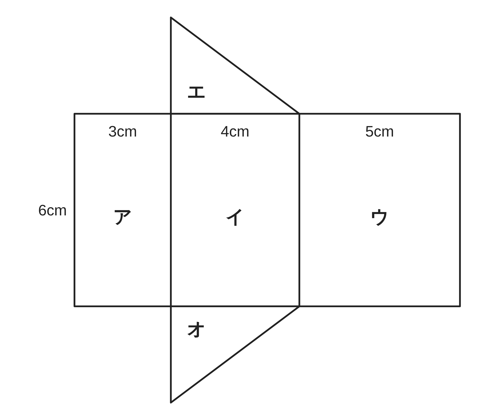
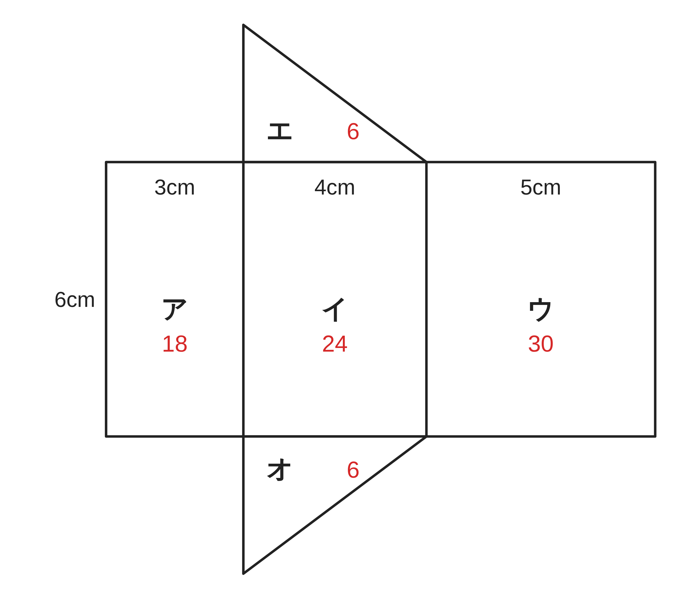
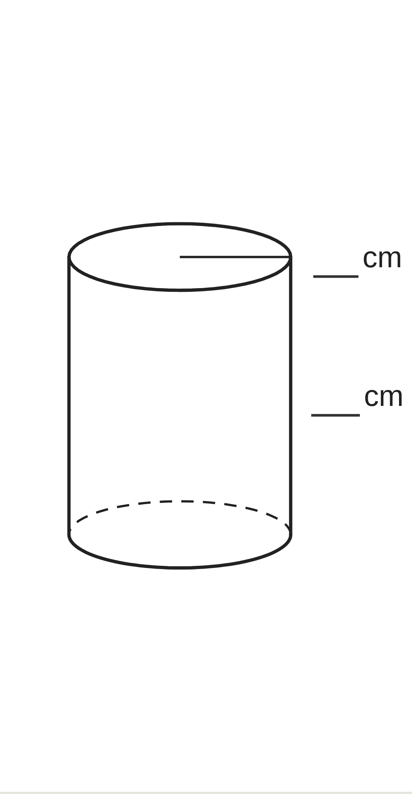
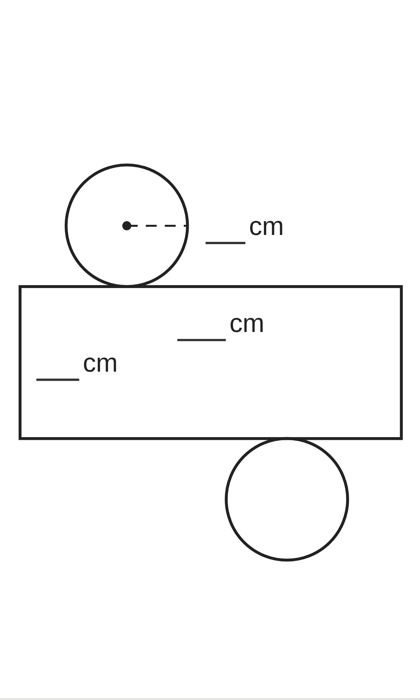
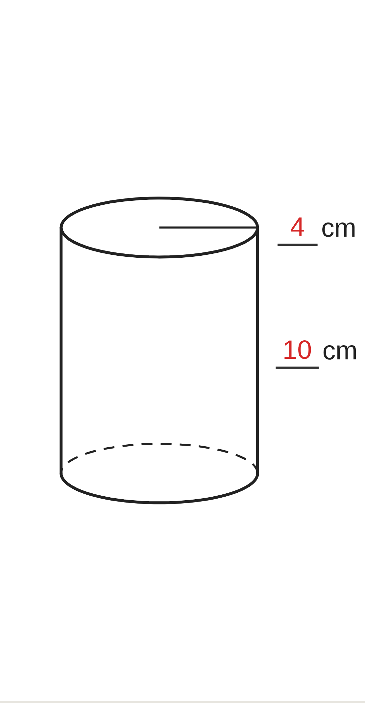
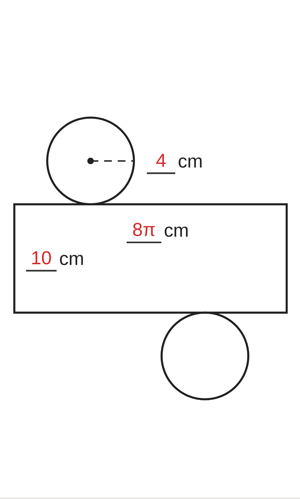

ペア学習
第9時 角柱と円柱の表面積を、展開図を使って求めよう
1人1問ずつ、出題し合う。ことばの意味を、自分の言葉で言う。
見取図
展開図
立面図
平面図
投影図
回転体
空間図形 第9時 角柱と円柱の表面積を、展開図を使って求めよう
めあて
第9時 角柱と円柱の表面積を、展開図を使って求めよう
学習課題
図の三角柱の、すべての面の面積の和を求めよう。
展開図をもとに考えよう。（底面は直角三角形）


空間図形 第9時 角柱と円柱の表面積を、展開図を使って求めよう
学習課題のまとめ
第9時 角柱と円柱の表面積を、展開図を使って求めよう
図の三角柱の、すべての面の面積の和を求めよう。
ア 3×6＝18 イ 4×6＝24 ウ 5×6＝30
エ・オ 1⁄2×3×4＝6
側面（ア・イ・ウ）… 18+24+30＝72
底面（エ・オ）… 6×2＝12
全部の和 … 72+12＝84
（答）84 cm²

【気づき】ア・イ・ウをつなげると、どんな形になるだろう。
横 12cm（＝底面のまわりの長さ）、縦 6cm の長方形
空間図形 第9時 角柱と円柱の表面積を、展開図を使って求めよう
ことば
第9時 角柱と円柱の表面積を、展開図を使って求めよう
角柱・円柱をまとめて という。
すべての面の面積の和が 。
側面全体の面積を 、
1つの底面の面積を という。
柱体の表面積 ＝ ＋ ×
柱体の側面積 ＝ 底面の × 高さ
空間図形 第9時 角柱と円柱の表面積を、展開図を使って求めよう
ことば
第9時 角柱と円柱の表面積を、展開図を使って求めよう
角柱・円柱をまとめて 柱体 という。
すべての面の面積の和が 表面積。
側面全体の面積を 側面積、
1つの底面の面積を 底面積 という。
柱体の表面積 ＝ 側面積 ＋ 底面積 × 2
柱体の側面積 ＝ 底面のまわりの長さ × 高さ
空間図形 第9時 角柱と円柱の表面積を、展開図を使って求めよう
例題
第9時 角柱と円柱の表面積を、展開図を使って求めよう
底面の半径が cm、
高さが cm の円柱の
表面積を求めよう。


空間図形 第9時 角柱と円柱の表面積を、展開図を使って求めよう
例題 解答
第9時 角柱と円柱の表面積を、展開図を使って求めよう
底面の半径が 4cm、高さが 10cm の円柱の表面積を求めよう。
側面積 … 底面の円周×高さ
2π×4×10＝80π
底面積 … π×4²＝16π
表面積 … 80π+16π×2＝112π
（答）112π cm²
展開図の横の長さ ＝ 底面の円周
＝2π×4＝8π


空間図形 第9時 角柱と円柱の表面積を、展開図を使って求めよう
考えよう
第9時 角柱と円柱の表面積を、展開図を使って求めよう
①
高さ 10cm の円柱と、
高さ 20cm の円柱の表面積を
求めて、表にまとめよう。
| 高さ 10cm | 高さ 20cm | |
|---|---|---|
| 側面積 | ||
| 底面積（2つ分） | ||
| 表面積 |
②
気づいたこと
③
なぜそうなるのか、
展開図（または式）を使って
説明しよう。
発展
演習まで解き終わった人は、考えてみよう！
表面積が、高さ 10cm のときの 2倍になるのは、
高さが何 cm のときだろう。考えよう。
空間図形 第9時 角柱と円柱の表面積を、展開図を使って求めよう
振り返り
第9時 角柱と円柱の表面積を、展開図を使って求めよう
今日のめあて
柱体
表面積
側面積
底面積
展開図
円周
側面
今日わかったことを、ペアで1つずつ言い合おう。
ワークシートと演習プリントを出そう。
空間図形 第9時 角柱と円柱の表面積を、展開図を使って求めよう